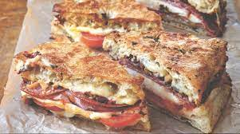

Mufaletta

Description
This recipe is the best sandwich you will ever taste! It will satisfy all your sandwich
needs with its delicious combination of toasted bread, tasty meats, gooey cheese, and olive mixture.
With three different types of meats, three cheeses, and a savoury olive dressing, you will never want
to put this sandwich down. And the best news? Its so EASY to make!!
Ingredients
- 1 loaf italian bread (can substitute your favorite bread)
- 8oz salami
- 8oz sliced deli chicken
- 8oz sliced deli ham
- 6oz sliced cheddar cheese
- 6oz sliced provolone cheese
- 6oz sliced gouda cheese
- 1 contianer parmesan cheese
- 1 container sliced green olives
- 1 can sliced black olives
- Italian dressing
Steps
- Preheat the oven to 400 degrees
- Cut the bread in half (horizontal cut) and scoop out some of the inside of each bread with a spoon (this is to
make room for the olive dressing without making it too sloppy!)
- Prepare the olive dressing. Mix together the green olives, black olives, parmesan cheese together
in a bowl. Then, add 6oz italian dressing (or to taste)
- Evenly distribute the olive dressing into each of the divets that were created on the top and bottom
half of the bread.
- Alternate layering each of the cheeses and meat onto the bread (half of each goes on each half of the bread)
- Leave the two halves of the bread separated. Put on cooking sheet and cook until thoroughly headed and cheese is melted
- Let cool until safe to eat, enjoy!